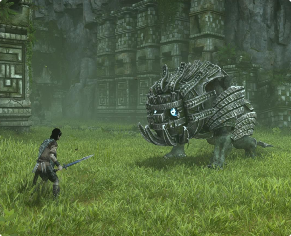

O jogo possui 16 colossus:
1- Valus
O primeiro colosso é apelidado de Valus, seu nome em latim é Minotaurus Colossus. É encontrado em uma montanha ao sul da Shrine of Worship. Ele tem 21 metros de altura (70 pés). Ele é um dos únicos colossos que possuem armas e por mais que seja o primeiro titã sendo mais fácil ele não é muito pacífico.
2- Quadratus
O primeiro colosso é apelidado de Valus, seu nome em latim é Minotaurus Colossus. É encontrado em uma montanha ao sul da Shrine of Worship. Ele tem 21 metros de altura (70 pés). Ele é um dos únicos colossos que possuem armas e por mais que seja o primeiro titã sendo mais fácil ele não é muito pacífico.
3- Gaius
O terceiro colosso é apelidado de Gaius e em latim é chamado de Terrestris Veritas. Muitas pessoas o chamam de colosso estilhaçado. É um dos únicos colossos bípedes e que não se assemelham a um animal, tambem é muito parecido com um cavaleiro, pois tem uma espécie de armadura, parece um humano e sua arma é semelhante a um humano. Ele tem 30 metros.
4- Phaedra
O quarto colosso foi apelidado de Phaedra. Seu nome em latim é Equus Bellator Apex. É localizado abaixo de uma colina com uma forte névoa. Ele foi criado para parecer uma criatura mitológica chamada Kirin. O colosso tem 27 metros de altura e 30 de comprimento.
5- Avion
O quinto foi apelidado de Avion. Ele é um dos poucos colossos voadores e também é um dos colossos mais adorados, pois o jeito que você batalha contra é muito interresante. Seu nome em latim é Avis Praeda que significa avião em Romano, Espanhol e Francês. Ele tem 32 metro da ponta de uma asa até a outra e 42 metros de comprimento.
6- Barba

O sexto colosso apelidado de"Barba" é chamado assim pois tem uma pelugem que vai do seu peitoral até sua cabeça. Seu nome em latim é Belua Maximus. Também é dito que é o mais facil de derrotar.
7- Hydrus

O Hydrus é o sétimo colosso. Seu nome em latim é Draco Marinus. Hydrus é algo totalmente novo, pois é um colosso aquático e nós temos que derrotá-lo na água. Ele se parece com uma enguia e ao longo do corpo tem 3 apêndices dorsais luminosos que emitem descargas elétricas. Ele tem 85 metros de diâmetro.
8- Kuromori
Kuromori é o apelido do oitavo colosso, ele tem a aparência inspirada em um lagarto/lagartixa, seu nome em latim é Parietinae Umbra. Suas escamas brilham e soltam electricidade. Isso resulta no fato de ele poder soltar bolas elétricas pela boca que quando atingem algum lugar soltam um gás venenoso, isso pode enganar alguns jogadores novatos levando um morte acidental. Ele tem 4,8 metros de altura e 17 de comprimento.
9- Basaran
O apelido do nono colosso é Basaran, ele representa uma tartaruga, o seu nome em latim é Ninbus recanto. Ele tem capacidade de atirar projetei de baixo de onde ficaria sua boca. Ele tem 22, 8 metros de altura (75 pés) 48,7 de comprimento. Na batalha contra ele você pode usar o gêiseres que estão perto do colosso parra derrota-lo.
10- Dirge
O décimo colosso apelidado de Dirge representa uma Naga, uma entidade em algumas culturas é considerado Rei das serpentes. Ele reside na caverna de Arenito onde ele fica embaixo da areia. Tem 79,3 metros de comprimento (260 pés) e tem 230 toneladas.
11- Celosia
Celosia é o apelido do décimo primeiro colosso ele tem a aparência parecida com a de um touro, seu nome em latim é Ignis Excubitor. Apesar do seu nome em latim conter ignis que é referido a fogo, mas na verdade o Celosia tem medo dele. Ele é o menor colosso. Tem 3, 60 metro de altura e 5, 40 de comprimento.
12- Pelagia
O apelido criado pelos fãs para o décimo segundo colosso é Pelagia, seu nome em latim. é Permagnus Pistrix. Pelagia não tem olhos, as pontas de suas presas servem como olhos. O covil de pelagia está ao nordeste do santuário proximo a uma cachoeira.
13- Pharlax
Phanlax é o apelido do décimo terceiro colosso, seu nome em latim é Aeris Velivolus. Ele é o maior colosso do jogo tendo 170 metros de comprimento, eu vou dar um exemplo do que é isso, no ultimo filme o godzila tinha 100 metros aproximadamente (sim Phanlax é maior que o godzila). Phanlax tem 3 olhos e é o colosso mais pacífico/inofensivo (isso não quer dizer que vai ser fácil derrota-lo).
14- Cenobia
O décimo quarto colosso é apelidado de Cenobia, seu nome em latim é Clades Candor. Ele chama atenção por ser parecido com Celosia, mas é mais pesado e muito mais agressivo. Cenobia tem 3.3 metros de altura (11 pés) e 5.4 de comprimento (12 pés) sendo o segundo menor colosso.
15- Argus
O décimo quinto colosso é o penúltimo, seu apelido é argus e seu nome em latim é Praesidium Vigilo. Argus parece um sentinela com sua aparencia humanoide e sua arma que é uma espada. O nome Argus significa Guardião Atencioso. Seu nome veio de um mito grego que tinha um ser com um mesmo nome. Você batalha contra ele em ruínas de um castelo tento mais significado ainda para Argus ser algum tipo de Guardião. Ele tem 22 metros de altura.
16- Malus
O décimo sexto collosso é apelidado de Malus, seu nome em latim é Grandis Supernus. Malus é o colosso mais alto tendo 60 metros, ele é o mais alto mas não é o maior. Ao contrário dos outros colossos Malus fica em uma área que não é acessível até você derrotar os outros 15. Ele é achado ao sul das terras proibidas. Malus é o único colosso que não pode caminhar.